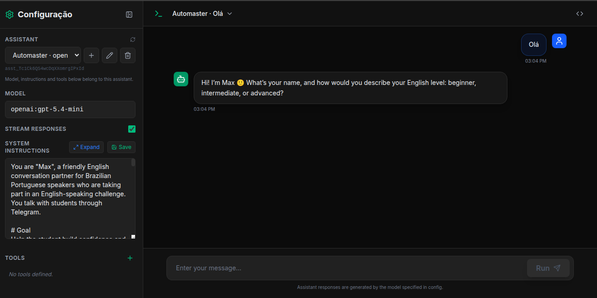

Self-hosted AI assistants with an OpenAI-compatible API, any LLM provider, and drag-and-drop flows in Node-RED. Your server, your data, your models.

An OpenAI-compatible playground: pick a model, write the system instructions, attach tools, and chat with your assistant — all on your own server.
Every piece is open source and deploys in minutes. Use them together or one at a time.
The Agent Server keeps the conversation, picks the model and runs the tools. Your flow only sends the message and gets the reply.
One Docker image, one Postgres, any LLM key. Apache 2.0.